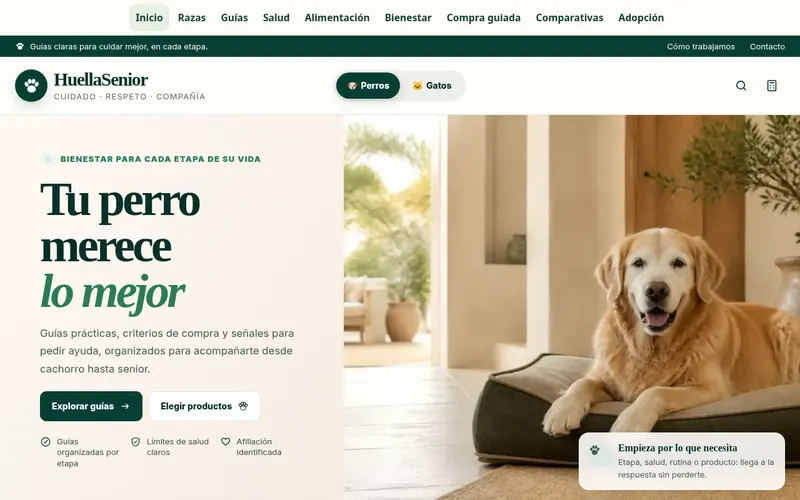

Proyecto propio publicado
HuellaSenior
Web de contenidos y afiliación sobre el cuidado de perros y gatos en cada etapa de su vida. Guías, comparativas y una estructura trabajada para posicionar en Google.
Visitar huellasenior.com →